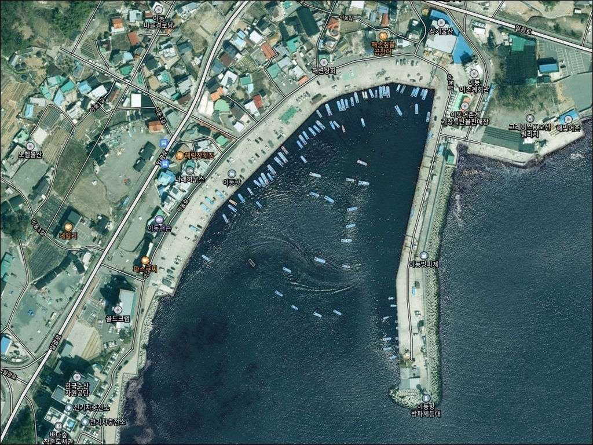
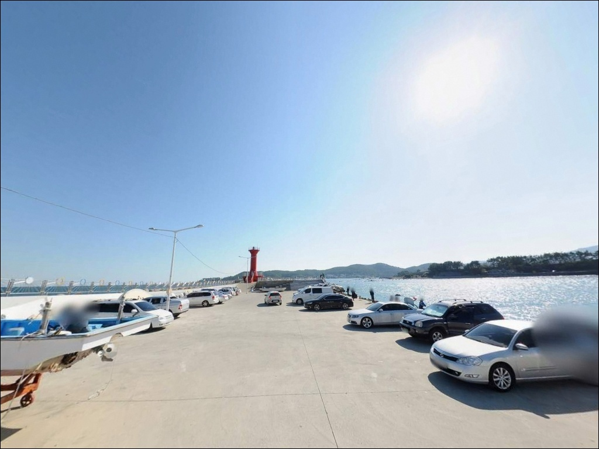
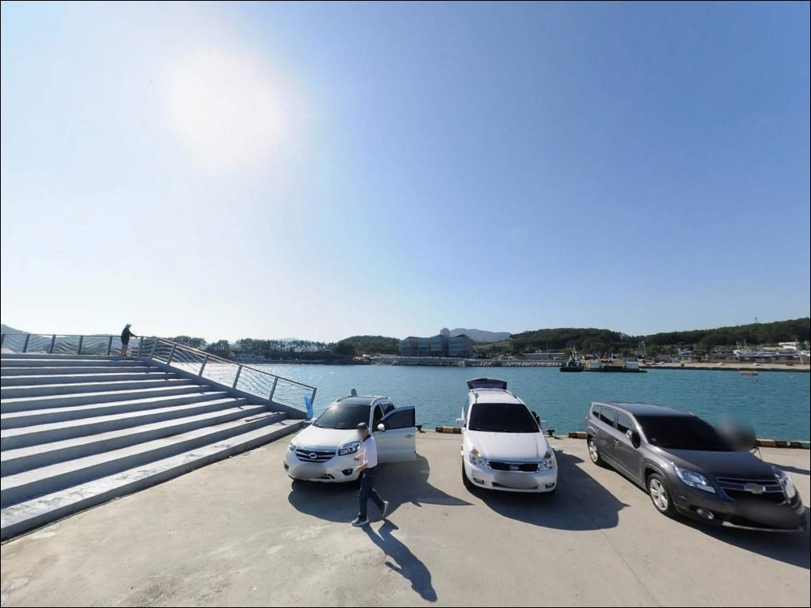
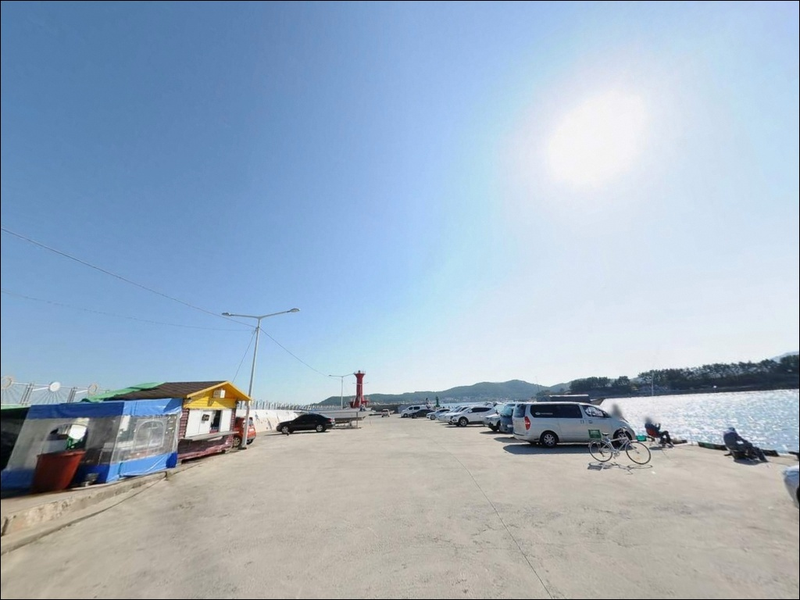
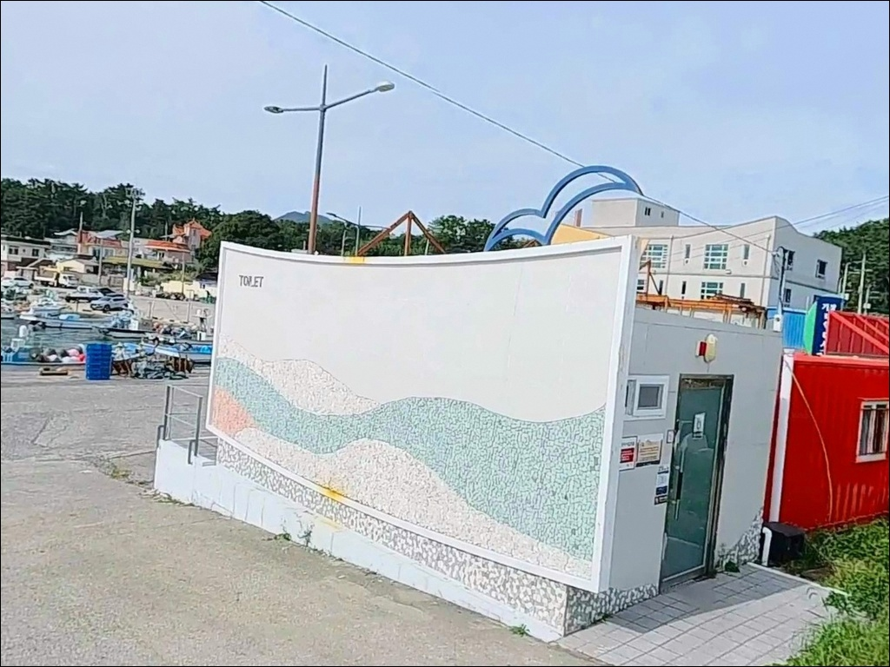
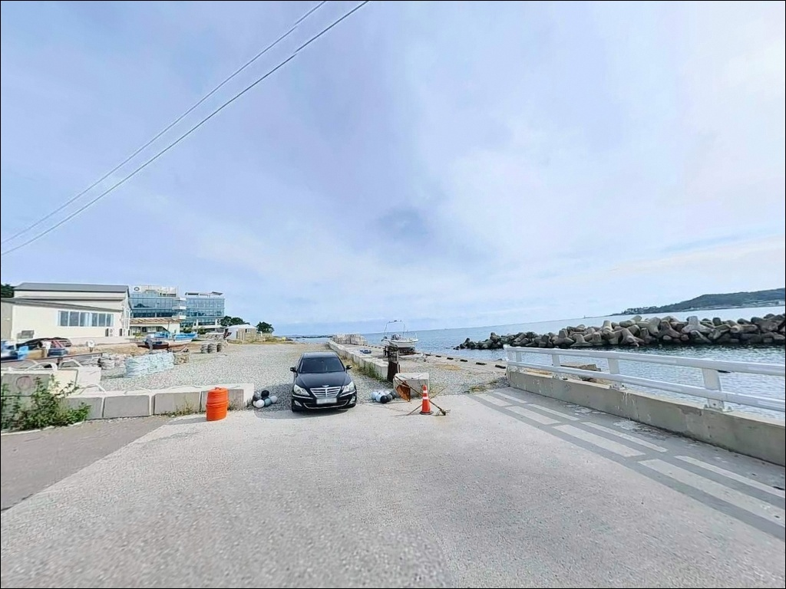
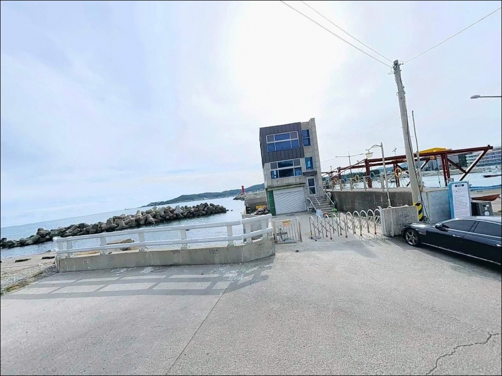
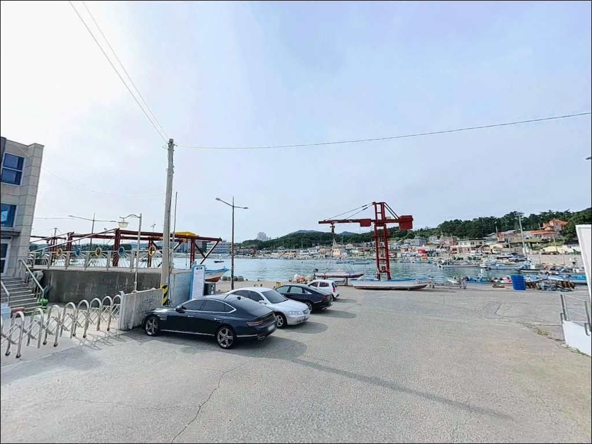
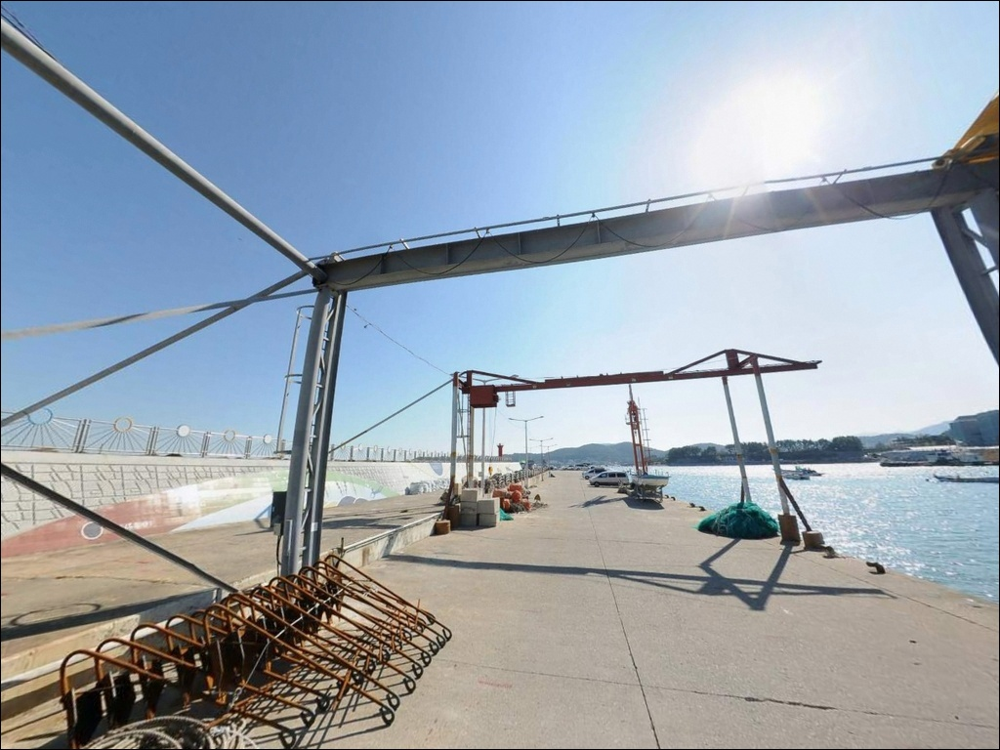

물때보다 동풍 파도부터 확인하는 이동항 방파제 도다리 원투낚시
이 페이지에는 광고(제휴 링크 포함)가 있으며, 광고 링크를 통해 구매하면 운영자가 판매 수익 또는 수수료를 받을 수 있습니다. 포인트 사진: 카카오맵 스카이뷰·로드뷰. 이 페이지의 지도·사진 이미지는 카카오맵의 실제 서비스 이미지와 다를 수 있습니다.


포인트 안내
이동항(이동방파제)
부산광역시 기장군 일광읍 이천리 170-8
이동항 외항 방파제는 동해에 직면한 구조라
너울성 파도의 영향을 직접 받습니다.
기상 확인 없이 외항 끝단에 진입하면
갑작스러운 파도로 낚시 자체가
불가능한 상황이 됩니다.
서해와 달리 동해안 방파제는
날씨가 맑아도 너울이 방파제를 덮치는
경우가 있는 구조입니다.
기장군 일광읍 이천리에 자리한 이동항은
일광해수욕장 북측 약 2km 지점의
동해안 소형 지방어항입니다.
외항 방파제와 내항 물양장이 명확히 구분된 구조로,
원투낚시부터 루어, 찌낚시까지
방식에 따라 자리 선택이 달라지는 포인트입니다.
이 글은 이동항의 지형 구조,
낚시 방식별 자리 선택 기준,
차박 여건에 집중합니다.
조황 단정이나 특정 어종 보장은
이 글의 범위에 포함되지 않습니다.

1. 포인트 위치 및 진입 동선 분석
이동항은 기장대로에서 이천로로 이어지는
포장도로를 통해 접근합니다.
진입 경사가 완만하고
일광읍 해안 도로와 직접 연결되어
승용차부터 캠핑카까지 진입에 무리가 없는
구조입니다.
항 내부까지 차량 진입이 가능하며
회차 공간도 내항 주차장 안에서
충분히 확보됩니다.
대형 차량도 방향 전환에 문제가 없는 수준이며,
주차는 내항 물양장 앞 주차장을
기본으로 이용합니다.
낚시 장비 하역과 주차를 동시에 해결할 수 있는
위치입니다.
방파제 입구 공터와 내항 선착장 주변도
주차 후보로 활용되는 구간입니다.
어선 계류 시설이 있는 생활형 어항이라
어민 작업 동선을 막지 않는 자리를
먼저 확인하고 주차하는 것이 기본 매너입니다.

2. 차박 환경 평가 및 야간 체류 여건
이동항의 차박 조건은
주차장과 화장실이 모두 갖춰져 있어
기본 인프라 측면에서는 안정적입니다.
내항 물양장 앞 주차장이 넓고 평평해
차량을 세우고 하룻밤 머무는 데
공간 부족 문제는 없는 구조입니다.
야간 환경은 완전한 암흑이 아닙니다.
맞은편 학리마을 식당가에서
인공 조명이 항 방향으로 일부 비쳐 들어오며,
방파제 등대 자체 조명도 켜져 있습니다.
시야 확보는 가능하지만
개인 헤드랜턴은 야간 이동에 필수입니다.
소형 어항 특성상 민가와 가까운 편이라
프라이버시는 제한적입니다.
동해안 방파제 구조상 동풍이나
북동풍이 강한 날에는 바람 영향을
직접 받으므로 기상 상황에 따라
체류 여건이 달라지는 점을
감안해야 합니다.


3. 주변 편의시설 및 인프라 현황
이동항 반경 1.5km 이내에
24시간 영업하는 편의점이 위치합니다.
낚시용품점도 인근에 두 곳 확인됩니다.
영빈낚시는 24시간 영업하며
갯지렁이와 채비 구매가 가능합니다.
일광낚시는 오전 4시부터 영업을 시작하는 곳으로
이른 출조 전 채비를 보충하기 좋은 동선입니다.
항 내 화장실이 설치되어 있습니다.
반경 1km 이내에는 학리마을 해산물 식당가가
형성되어 있어 낚시 후 식사 해결이 가능합니다.
낚시용품 대형 매장이 필요하다면
기장읍 방향 약 6km 거리의
대형 낚시용품점을 출발 전 들르는 동선이
효율적입니다.
주유소는 항 북쪽 약 4km,
남쪽 약 5km 거리에 각각 위치합니다.
섬이 아닌 육지 어항이라
응급 상황 시 기장읍이나 부산 시내로
이동하는 데 큰 제약은 없습니다.

4. 방문 전 준비사항 및 체크 포인트
이동항 방문 전 가장 먼저 확인할 것은
기상청 해상 예보입니다.
동해안에서는 서해와 달리 물때보다
파도와 바람 방향이 낚시 여건을
결정하는 주요 변수입니다.
동풍·북동풍이 강한 날에는
외항 진입 자체를 피하는 편이 안전합니다.
동해안 방파제는 너울성 파도가
날씨와 무관하게 방파제를 덮칠 수 있습니다.
외항 테트라포드 구간은 접근 난이도가 있으므로
구명조끼 착용은 진입 전 필수입니다.
야간 낚시에는 헤드랜턴과 예비 조명을
반드시 챙겨야 하며,
테트라포드 위 야간 이동은 자제하는 편이
기본 안전 원칙입니다.
어항 특성상 미역 건조 시기에는
어민 작업 공간이 일시적으로 확장됩니다.
방문 시 주차 위치와 이동 동선이
어업 활동과 겹치지 않도록
현장에서 한 번 더 확인하는 것이
기본 매너입니다.

5. 외항 테트라포드 구간에서 낚시 조과가 달라지는 조건
이동항은 동해에 직면한 소형 지방어항으로
외항 방파제가 북동쪽 방향으로 뻗어 있는 구조입니다.
외항 전 구간에 테트라포드가 배치되어 있으며,
방파제 끝단으로 갈수록
수심이 급격히 깊어지는 동해안 전형적 구조를
보입니다.
끝단과 테트라포드 접경 구간에서
수심 변화가 확실하게 형성됩니다.
내항은 콘크리트 직벽 위주로
발판이 평탄하고 안정적입니다.
정박선 영향이 있는 정수역이라
조류 흐름은 약한 편이며,
외항과 내항의 지형 조건 차이가 뚜렷해
낚시 방식에 따라 자리 선택이 달라지는
구조입니다.
동해안 특성상 조차가 50cm 내외로 작아
서해처럼 물때를 세밀하게 따지는 방식은
이 포인트에서 우선 변수가 되지 않습니다.
조류는 연안을 따라 남북 방향으로 흐르며,
방파제 끝단 코너 구간에서
조류가 집중되는 흐름이 형성됩니다.
출조 전 이동항 또는
기장 동해 원투 조황을
검색해 보시는 편이 좋습니다.


6. 포인트에 적합한 낚시 스타일 제안
이 포인트에서 가장 잘 맞는 낚시는
외항 방향 원투낚시입니다.
방파제 끝단으로 갈수록 수심이 빠르게
깊어지는 구조가 바닥층 어종 공략에
유리한 조건을 만들어냅니다.
갯지렁이 미끼에 2~3단 천평채비를 달아
외항 방향으로 멀리 던지는 방식이
봄부터 초여름 도다리 시즌에
잘 맞습니다.
찌낚시는 내항과 외항 테트라 경계 구간
두 곳에서 모두 운용 가능합니다.
학꽁치를 노린다면 내항의
잔잔한 수면에서 표층 흘림찌 채비가 적합하며,
야간에는 방파제 테트라포드 주변에서
볼락을 대상으로 찌낚시를 전개하는
방식이 어울립니다.
루어낚시는 외항 테트라포드 구간을
중심으로 공략합니다.
소형 지그헤드에 웜을 달아
바닥권을 천천히 탐색하면
볼락과 쥐노래미 계열 어종을
기대해 볼 수 있습니다.
일광 앞바다 특성상 베이트피시가 유입되는 시점에는
방파제 끝단 루어 반응이 빠르게 올라오는
구조입니다.

7. 대안 포인트 및 플랜 B 동선
이동항 여건이 여의치 않다면
북쪽 약 4km 거리의
문중항방파제가 첫 번째 대안입니다.
일광면 동일 해역 패턴을 공유하며
주차가 편리하고 화장실이 확인된 곳입니다.
이동항과 지형 구조가 유사해
원투낚시와 루어낚시 모두 운용 가능합니다.
남쪽 약 5km 거리의
죽성방파제도 대안으로 검토할 수 있습니다.
죽성리 해안에 위치한 소형 방파제로
동해안 원투낚시와 루어낚시가 가능하며,
진입 도로가 정비되어 있습니다.
인근 학리항은 내항 낚시가 금지된 곳입니다.
외항 테트라포드 구간에서만 낚시가 가능하며
주차 공간이 협소한 편이라,
이동항이 여의치 않을 때
대체 포인트로 삼기보다는
문중항이나 죽성 방향을 먼저 검토하는
동선이 효율적입니다.
차박 후보로는 일광해수욕장 인근 주차장이
주차 공간이 넓고 개방형 구조라
이동항보다 넓은 공간을 확보할 수 있습니다.

도다리 원투에서 볼락 루어까지,
이동항 방파제가 어울리는 낚시꾼
기상 확인이 번거롭지 않고
조류보다 파도 방향을 먼저 읽는 낚시꾼이라면
이동항의 동해안 방파제 구조가
잘 맞는 포인트입니다.
도다리 원투낚시를 주력으로 하거나
야간 볼락 루어를 즐기는 낚시인이라면
외항과 내항 조건이 각각의 방식에
적합한 자리를 제공합니다.
반면 외항 테트라포드 진입에
익숙하지 않거나 기상 변화에
대응하기 어려운 상황이라면
내항 직벽 자리를 기본으로 잡고
안전 거리를 유지하는 편이 맞습니다.
동해안 방파제는 날씨가 맑아도
너울성 파도가 갑자기 덮칠 수 있다는 점을
항상 전제로 두어야 합니다.
주차와 화장실이 갖춰진 구조라
낚시를 마치고 조용히 하룻밤 머무는 여정에도
큰 불편 없이 이동항을 베이스로 삼을 수 있으며,
학리 식당가에서 마무리 식사까지 엮으면
기장 동해안 차박 낚시 동선으로
기억에 남는 출조가 될 수 있는 포인트입니다.